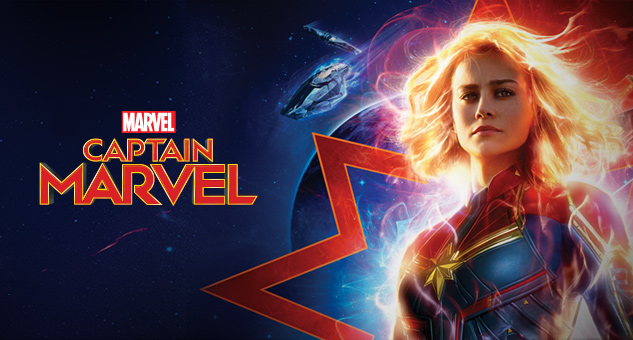

Captain America (2011 film)
The First Avenger is a 2011 American superhero film based on the Marvel Comics character Captain America. Produced by Marvel Studios and distributed by Paramount Pictures, it is the fifth film in the Marvel Cinematic Universe (MCU). The film was directed by Joe Johnston, written by Christopher Markus and Stephen McFeely, and stars Chris Evans as Steve Rogers / Captain America alongside Tommy Lee Jones, Hugo Weaving, Hayley Atwell, Sebastian Stan, Dominic Cooper, Neal McDonough, Derek Luke, and Stanley Tucci. During World War II, Steve Rogers, a frail man, is transformed into the super-soldier Captain America and must stop the Red Skull (Weaving) from using the Tesseract as an energy source for world domination.
Agent Carter (2013 film)
Agent Carter is a 2013 American direct-to-video short film featuring the Marvel Comics character Peggy Carter, produced by Marvel Studios and distributed by Walt Disney Studios Home Entertainment. It is a follow up to the 2011 feature film Captain America: The First Avenger, and is the fourth Marvel One-Shot short film set in the Marvel Cinematic Universe (MCU), sharing continuity with the films of the franchise. The film is directed by Louis D'Esposito from a screenplay by Eric Pearson, and stars Hayley Atwell as Peggy Carter, along with Bradley Whitford and Dominic Cooper. In Agent Carter, Peggy Carter sets out on a solo mission to acquire the mysterious Zodiac while facing sexism post-World War II at the SSR, a precursor to S.H.I.E.L.D.

Captain Marvel (2019 film)
Captain Marvel is a 2019 American superhero film based on Marvel Comics featuring the character Carol Danvers / Captain Marvel. Produced by Marvel Studios and distributed by Walt Disney Studios Motion Pictures, it is the 21st film in the Marvel Cinematic Universe (MCU). The film was written and directed by Anna Boden and Ryan Fleck, with Geneva Robertson-Dworet also contributing to the screenplay. Brie Larson stars as Carol Danvers, alongside Samuel L. Jackson, Ben Mendelsohn, Djimon Hounsou, Lee Pace, Lashana Lynch, Gemma Chan, Annette Bening, Clark Gregg, and Jude Law. Set in 1995, the story follows Danvers as she becomes Captain Marvel after Earth is caught in the center of a galactic conflict between two alien civilizations.
Iron Man (2008 film)
Iron Man is a 2008 American superhero film based on the Marvel Comics character of the same name. Produced by Marvel Studios and distributed by Paramount Pictures, it is the first film in the Marvel Cinematic Universe (MCU). Directed by Jon Favreau from a screenplay by the writing teams of Mark Fergus and Hawk Ostby, and Art Marcum and Matt Holloway, the film stars Robert Downey Jr. as Tony Stark / Iron Man alongside Terrence Howard, Jeff Bridges, Shaun Toub, and Gwyneth Paltrow. In the film, following his escape from captivity by a terrorist group, world famous industrialist and master engineer Tony Stark builds a mechanized suit of armor and becomes the superhero Iron Man.

Iron Man 2 (2010 film)
Iron Man 2 is a 2010 American superhero film based on the Marvel Comics character Iron Man. Produced by Marvel Studios and distributed by Paramount Pictures, it is the sequel to Iron Man (2008) and the third film in the Marvel Cinematic Universe (MCU). Directed by Jon Favreau and written by Justin Theroux, the film stars Robert Downey Jr. as Tony Stark / Iron Man alongside Gwyneth Paltrow, Don Cheadle, Scarlett Johansson, Sam Rockwell, Mickey Rourke, and Samuel L. Jackson. Six months after Iron Man, Tony Stark resists calls from the United States government to hand over the Iron Man technology, which is causing his declining health. Meanwhile, Russian scientist Ivan Vanko (Rourke) uses his own version of the technology to pursue a vendetta against the Stark family.
The Incredible Hulk (2008 film)
The Incredible Hulk is a 2008 American superhero film based on the Marvel Comics character the Hulk. Produced by Marvel Studios and distributed by Universal Pictures, it is the second film in the Marvel Cinematic Universe (MCU). It was directed by Louis Leterrier from a screenplay by Zak Penn, and stars Edward Norton as Bruce Banner alongside Liv Tyler, Tim Roth, Tim Blake Nelson, Ty Burrell, and William Hurt. In the film, Bruce Banner becomes the Hulk as an unwitting pawn in a military scheme to reinvigorate the "Super-Soldier" program through gamma radiation. Banner goes on the run from the military while attempting to cure himself of the Hulk.

Thor (2011 film)
Thor is a 2011 American superhero film based on the Marvel Comics character of the same name. Produced by Marvel Studios and distributed by Paramount Pictures, it is the fourth film in the Marvel Cinematic Universe (MCU). It was directed by Kenneth Branagh, written by the writing team of Ashley Edward Miller and Zack Stentz along with Don Payne, and stars Chris Hemsworth as the title character alongside Natalie Portman, Tom Hiddleston, Stellan Skarsgård, Colm Feore, Ray Stevenson, Idris Elba, Kat Dennings, Rene Russo, and Anthony Hopkins. After reigniting a dormant war, Thor is banished from Asgard to Earth, stripped of his powers and his hammer Mjölnir. As his brother Loki (Hiddleston) plots to take the Asgardian throne, Thor must prove himself worthy.

The Avengers (2012 film)
Marvel's The Avengers (classified under the name Marvel Avengers Assemble in the United Kingdom and Ireland), or simply The Avengers, is a 2012 American superhero film based on the Marvel Comics superhero team of the same name. Produced by Marvel Studios and distributed by Walt Disney Studios Motion Pictures, it is the sixth film in the Marvel Cinematic Universe (MCU). Written and directed by Joss Whedon, the film features an ensemble cast including Robert Downey Jr., Chris Evans, Mark Ruffalo, Chris Hemsworth, Scarlett Johansson, and Jeremy Renner as the Avengers, alongside Tom Hiddleston, Clark Gregg, Cobie Smulders, Stellan Skarsgård, and Samuel L. Jackson. In the film, Nick Fury and the spy agency S.H.I.E.L.D. recruit Tony Stark, Steve Rogers, Bruce Banner, and Thor to form a team capable of stopping Thor's brother Loki from subjugating Earth.
Item 47 (2012 film)
Item 47 is a 2012 American direct-to-video short film featuring the Marvel Comics organization S.H.I.E.L.D. (Strategic Homeland Intervention Enforcement and Logistics Division), produced by Marvel Studios and distributed by Walt Disney Studios Home Entertainment on the home media release of Marvel's The Avengers. It is a follow up and spin-off of The Avengers, and is the third Marvel One-Shot short film set in the Marvel Cinematic Universe (MCU), sharing continuity with the films of the franchise. The film is directed by Louis D'Esposito, with a screenplay by Eric Pearson, and stars Lizzy Caplan, Jesse Bradford, Maximiliano Hernández, and Titus Welliver, with Hernández reprising his role from the film series. In Item 47, two civilians come across a Chitauri gun and use it to commit crimes.

Iron Man 3 (2013 film)
Iron Man 3 is a 2013 American superhero film based on the Marvel Comics character Iron Man, produced by Marvel Studios and distributed by Walt Disney Studios Motion Pictures. It is the sequel to Iron Man (2008) and Iron Man 2 (2010), and the seventh film in the Marvel Cinematic Universe (MCU). The film was directed by Shane Black from a screenplay he co-wrote with Drew Pearce, and stars Robert Downey Jr. as Tony Stark / Iron Man alongside Gwyneth Paltrow, Don Cheadle, Guy Pearce, Rebecca Hall, Stéphanie Szostak, James Badge Dale, Jon Favreau, and Ben Kingsley. In Iron Man 3, Tony Stark wrestles with the ramifications of the events of The Avengers during a national terrorism campaign on the United States led by the mysterious Mandarin.
All Hail the King (2014 film)
All Hail the King is a 2014 American direct-to-video short film featuring the Marvel Cinematic Universe (MCU) character Trevor Slattery, produced by Marvel Studios and distributed by Walt Disney Studios Home Entertainment. It is a follow up and spin-off of Iron Man 3 (2013), and is the fifth Marvel One-Shot short film set in the MCU, sharing continuity with the films of the franchise. The film is written and directed by Drew Pearce, and stars Ben Kingsley as Slattery, alongside Scoot McNairy, Lester Speight, and Sam Rockwell. In All Hail the King, a documentary filmmaker (McNairy) interviews the infamous fake terrorist Trevor Slattery while in jail.

Thor: The Dark World (2013 film)
Thor: The Dark World is a 2013 American superhero film based on the Marvel Comics character Thor, produced by Marvel Studios and distributed by Walt Disney Studios Motion Pictures. It is the sequel to Thor (2011) and the eighth film in the Marvel Cinematic Universe (MCU). The film was directed by Alan Taylor from a screenplay by Christopher Yost and the writing team of Christopher Markus and Stephen McFeely. It stars Chris Hemsworth as Thor alongside Natalie Portman, Tom Hiddleston, Anthony Hopkins, Stellan Skarsgård, Idris Elba, Christopher Eccleston, Adewale Akinnuoye-Agbaje, Kat Dennings, Ray Stevenson, Zachary Levi, Tadanobu Asano, Jaimie Alexander, and Rene Russo. In the film, Thor and Loki (Hiddleston) team up to save the Nine Realms from the Dark Elves.
Captain America: The Winter Soldier (2014 film)
Captain America: The Winter Soldier is a 2014 American superhero film based on the Marvel Comics character Captain America, produced by Marvel Studios and distributed by Walt Disney Studios Motion Pictures. It is the sequel to Captain America: The First Avenger (2011) and the ninth film in the Marvel Cinematic Universe (MCU). The film was directed by Anthony and Joe Russo from a screenplay by the writing team of Christopher Markus and Stephen McFeely. It stars Chris Evans as Steve Rogers / Captain America alongside Scarlett Johansson, Sebastian Stan, Anthony Mackie, Cobie Smulders, Frank Grillo, Emily VanCamp, Hayley Atwell, Robert Redford, and Samuel L. Jackson. In the film, Captain America joins forces with Black Widow (Johansson) and Falcon (Mackie) to uncover a conspiracy within the spy agency S.H.I.E.L.D. while facing a mysterious assassin known as the Winter Soldier (Stan).

Guardians of the Galaxy (2014 film)
All Hail the King is a 2014 American direct-to-video short film featuring the Marvel Cinematic Universe (MCU) character Trevor Slattery, produced by Marvel Studios and distributed by Walt Disney Studios Home Entertainment. It is a follow up and spin-off of Iron Man 3 (2013), and is the fifth Marvel One-Shot short film set in the MCU, sharing continuity with the films of the franchise. The film is written and directed by Drew Pearce, and stars Ben Kingsley as Slattery, alongside Scoot McNairy, Lester Speight, and Sam Rockwell. In All Hail the King, a documentary filmmaker (McNairy) interviews the infamous fake terrorist Trevor Slattery while in jail.
Guardians of the Galaxy Vol. 2 (2017 film)
Guardians of the Galaxy Vol. 2 is a 2017 American superhero film based on the Marvel Comics superhero team Guardians of the Galaxy, produced by Marvel Studios and distributed by Walt Disney Studios Motion Pictures. It is the sequel to Guardians of the Galaxy (2014) and the 15th film in the Marvel Cinematic Universe (MCU). Written and directed by James Gunn, the film stars an ensemble cast featuring Chris Pratt, Zoe Saldaña, Dave Bautista, Vin Diesel, Bradley Cooper, Michael Rooker, Karen Gillan, Pom Klementieff, Elizabeth Debicki, Chris Sullivan, Sean Gunn, Sylvester Stallone, and Kurt Russell. In Guardians of the Galaxy Vol. 2, the Guardians travel throughout the cosmos as they help Peter Quill learn more about his mysterious parentage.
Avengers: Age of Ultron (2015 film)
Avengers: Age of Ultron is a 2015 American superhero film based on the Marvel Comics superhero team the Avengers. Produced by Marvel Studios and distributed by Walt Disney Studios Motion Pictures, it is the sequel to The Avengers (2012) and the 11th film in the Marvel Cinematic Universe (MCU). Written and directed by Joss Whedon, the film features an ensemble cast including Robert Downey Jr., Chris Hemsworth, Mark Ruffalo, Chris Evans, Scarlett Johansson, Jeremy Renner, Don Cheadle, Aaron Taylor-Johnson, Elizabeth Olsen, Paul Bettany, Cobie Smulders, Anthony Mackie, Hayley Atwell, Idris Elba, Stellan Skarsgård, James Spader, and Samuel L. Jackson. In the film, the Avengers fight Ultron, an artificial intelligence obsessed with causing human extinction.

Ant-Man (2015 film)
Ant-Man is a 2015 American superhero film based on the Marvel Comics characters of the same name: Scott Lang and Hank Pym. Produced by Marvel Studios and distributed by Walt Disney Studios Motion Pictures, it is the 12th film in the Marvel Cinematic Universe (MCU). The film was directed by Peyton Reed from a screenplay by the writing teams of Edgar Wright and Joe Cornish, and Adam McKay and Paul Rudd. It stars Rudd as Scott Lang / Ant-Man alongside Evangeline Lilly, Corey Stoll, Bobby Cannavale, Michael Peña, Tip "T.I." Harris, Anthony Mackie, Wood Harris, Judy Greer, David Dastmalchian, and Michael Douglas as Hank Pym. In the film, Lang must help defend Pym's Ant-Man shrinking technology and plot a heist with worldwide ramifications.
Captain America: Civil War (2016 film)
Captain America: Civil War is a 2016 American superhero film based on the Marvel Comics character Captain America, produced by Marvel Studios and distributed by Walt Disney Studios Motion Pictures. It is the sequel to Captain America: The First Avenger (2011) and Captain America: The Winter Soldier (2014), and the 13th film in the Marvel Cinematic Universe (MCU). The film was directed by Anthony and Joe Russo from a screenplay by the writing team of Christopher Markus and Stephen McFeely, and stars Chris Evans as Steve Rogers / Captain America alongside an ensemble cast including Robert Downey Jr., Scarlett Johansson, Sebastian Stan, Anthony Mackie, Don Cheadle, Jeremy Renner, Chadwick Boseman, Paul Bettany, Elizabeth Olsen, Paul Rudd, Emily VanCamp, Tom Holland, Frank Grillo, William Hurt, and Daniel Brühl. In Captain America: Civil War, disagreement over international oversight of the Avengers fractures the team into two opposing factions—one led by Steve Rogers and the other by Tony Stark (Downey).